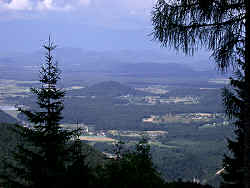
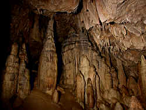

Obir Tropfsteinhöhlen
Obir Dripstone Caves
Useful Information
|  |
| Image: the view from Unterschäffler-Alpe. |
| Location: | Bad Eisenkappel, Kärnten. A10 Tauernautobahn to Villach, A2 to exit Klagenfurt Nord, direction Völkermarkt, after 9km to Bad Eisenkappel From Wien (Vienna) to Graz, west to exit Völkermarkt Ost. Near the border to Slovenia. |
| Open: |
Easter to APR daily 10:30, 12:30, 14:30. MAY to JUN daily 9:30, 11:00, 12:30, 14:00, 15:30. JUL to AUG daily 9:30, 10:30, 11:30, 12:30, 13:30, 14:30, 15:30. SEP daily 9:30, 11:00, 12:30, 14:00, 15:30. 01-OCT to 26-OCT daily 10:30, 12:30, 14:30. Winter: by appointment for grous of 15 and more only. Minimum 15 visitors per tour. [2005] |
| Fee: |
Adults EUR 19, Children (4-15) EUR 10.50, Students EUR 18, OAP EUR 18, Family (2+3) EUR 45.50. Groups (20+): Adults EUR 18, Children (4-15) EUR 9.50. Holders of Kärnten Card, Power Card, National Park Card or Wörthersee Card: free. No children under 4. [2009] |
| Classification: |
 Karst cave,
Wettersteinkalk, Trias. Karst cave,
Wettersteinkalk, Trias.
|
| Light: | electric. |
| Dimension: |
L=5,000m, A=1,080m asl. Lange Grotte: L=260m. Wartburg-Höhle: L=700m. Kleine Grotte: L=130m. |
| Guided tours: |
L=1,300m, D=90min, plus 90min bus trip.
Multimedia show in


|
| Photography: | |
| Accessibility: | |
| Bibliography: |
Robert Bouchal, Josef Wirth (2000):
Österreichs faszinierende Höhlenwelt,
Pichler-Verlag, Wien Hubert Trimmel (1959): Beobachtungen aus den Tropfsteinhöhlen bei der Unterschäffleralpe im Hochobir (Kärnten), Die Höhle, Vol 10, Pt 2, pp 25-33 P. Haderlapp (1997): Die Obir-Tropfsteinhöhle, Bad Eisenkappel Hubert Trimmel (1999): Die Obir-Tropfsteinhöhlen - eine neue Schauhöhle in Kärnten, Die Höhle, Vol 42, Pt 1, Wien pp 57-66 Christoph Spötl (2004): Das Untertagelabor in den Obir-Höhlen, Die Höhle 1-4 2004, pp 34ff. |
| Address: |
Obir Tropfsteinhöhlen, Hauptplatz 7, A-9135 Bad Eisenkappel, Tel: +43-4238-8239, Fax: +43-4238-8374,
E-mail: |
| As far as we know this information was accurate when it was published (see years in brackets), but may have changed since then. Please check rates and details directly with the companies in question if you need more recent info. |
|
History
 |
| Image: fine pure white stalactites, some with a little yellow stain. |
| 1171 | oldest documents about mining in the Hochobir (high Obir) area. |
| 1568 to 1729 | many documents about mining. |
| 1720 | start of lead and zinc mining at the Unterschäffler-Alpe. |
| 1870 | natural caves discovered in the Markus-Stollen. |
| 1894/95 | survey of first 2km of caves. |
| 1903 | the caves are first mentioned in a tourist guide to Eisenkappel, first guided tours took place. |
| 1941 | mining stopped. |
| 1985 | rediscovered by Peter Kuneth biology professor Dr. Peter Haderlapp. |
| 1987 | foundation of the Verein Obir-Tropfsteinhöhlen. |
| 1988 | foundation of the Obir-Tropfsteinhöhlen Errichtungs- und Betriebsges.m.b.H.. |
| 1991 | opened to the public. |
Description
 |
| Image: typical miners tools. |
The Obir Caves are located in a very komplex and interresting geologic situation with Wettersteinkalk (Wetterstein limestone, about 200 Ma), greenstone, granite and much more. Eight different, east-west bound layers are located in an area of only 10km (from the north to the south). Most important for this area is a belt of volcanic rocks with many ores, which lead to mining activities thousands of years ago.
Lead ore mining took place in the reef limestone on Unterschäffler-Alpe during the 19th century. When following the lead ore seams, the miners now and then discovered a cave. They used them sometimes to store leavings, covering the speleothems with limestone and volcanic rocks. Three natural caves and numerous mining passages, with a total length of about five kilometre are today called Obir Caves. The caves have no natural entrance at all, they were only discovered because of the mining activities.
|  |
| Image: this first hall was once used by the miners to store debris. |
Numerous springs in the valley were the reason for the foundation of the spas Bad Vellach and Bad Eisenkappel at the turn of the century. Differnet wells are used for the treatment in the spas, others are still accessible. They were lately connected by a mineral spring trail and signs at the springs tell about their type and specialties. Very important is of course the carbonatic water, which is water with an high content of carbon dioxide. This gas is responsible for limestone solution and thus for the formation of caves in limestone. The source of carbon dioxide in the water of the area is not only the air and the soil, as typical for karst areas, but also the volcanism. This means a higher amount of gas and thus a higher amount of solution. On the other hand, the geologic situation did not result in extraordinary colours of the speleothems. Often the ores and minerals dye the speleothems in all kinds of colours. This did not happen here, the dripstones are generally extremely white.
The tour through Obir caves starts at the center of Bad Eisenkappel. There are numerous parking lots at the upper end of the town, and five minutes walk bring the visitor to the ticket office. From here a regular bus shuttle brings the visitors to the Unterschäffler-Alpe at 1,080m asl. The road is private and the owners requested in the lease agreement, that there would be no private cars on the road. However, the road is narrow and steep, and so it is a good idea not to allow visitors to drive up on themselves anyway.
 |
| Image: a fine stalagmite. |
After reaching the alp, depending on the number of visitors on the bus, there will be one or more tours through the cave. The visitors are equipped with helmets, a remainder of the mining history, and if necessary with a warm jacket. Then the tour starts with Glück auf, the traditional German miner greeting. Most of the tour path is walking through horizontal tunnels of the old mine. Several times there is a stair which leads up to the next level. At the end the tour will leave about 50m higher up the hill and walk back to the entrance on the surface.
The entrance area is dedicated to the mining history. There is mining equipment, like drills, lorries and mining lamps. Several times there are little szenes from the daily life of a miner in side passages, including puppets and sound installations. Rather funny is a miner sitting on a toilet making awful sounds. But the mining is not explained, neither is the cave bear skull, which originates from a bear cave nearby. The Obir caves have no natural entrance, so there were absolutely no palaeontological remains in the caves.
The tour guide tells a lot about how to do the tour, and a little bit about each stop. But first there is a multimedia presentation at each stop, often with a movie or at least with slides, with sound and music, and light at various places all over the caverns. Unfortunately all this effort is just for entertainment without any content. A time travel back to the time of the discovery of the cave 150 years in the past, a lot of stories about mining, dwarfs, fairies and the (legendary) discoverer who never came back from his exploration. Probably a great experience for children, but more or less annoying for adults.
The true highlight is the last natural cave visited. Here a wealth of stalactites, stalagmites, and curtains can be seen. All of them are pure white, without any visible destructions or lamp flora an extraordinary sight for a show cave. The reason is obviously the recent opening of the cave, and it might change during the next years. The most impressive treasure is much smalle than expected from the photographs. A side passage with a blue-green lake and pure white dripstones is only 40cm high and at the floor of the path. The guide leaves her hard hat at this place, otherwise nobody would mention this secluded spot. This makes this place hard to reach and will probably protect it from destructions for years to come.
 |
| Obir Tropfsteinhöhlen Gallery |
- See also
 Search Google for "Obir Tropfsteinhöhlen"
Search Google for "Obir Tropfsteinhöhlen" Google Earth Placemark
Google Earth Placemark Obir-Tropfsteinhöhlen - Wikipedia
(visited: 28-JUL-2011)
Obir-Tropfsteinhöhlen - Wikipedia
(visited: 28-JUL-2011) Obir Tropfsteinhöhlen,
official website.
(
Obir Tropfsteinhöhlen,
official website.
(
 )
)- Die Hochobir-Tropfsteinhöhlen in Kärnten, A
(visited: 28-JUL-2011)
by Franz Lindenmayr.
()
- ÖJ-Reisetip
- Das Untertagelabor in den Obir-Höhlen,
pdf-file.
By Christoph Spötl, Inst. f. Geologie und Paläontologie, Univ. Innsbruck.
()